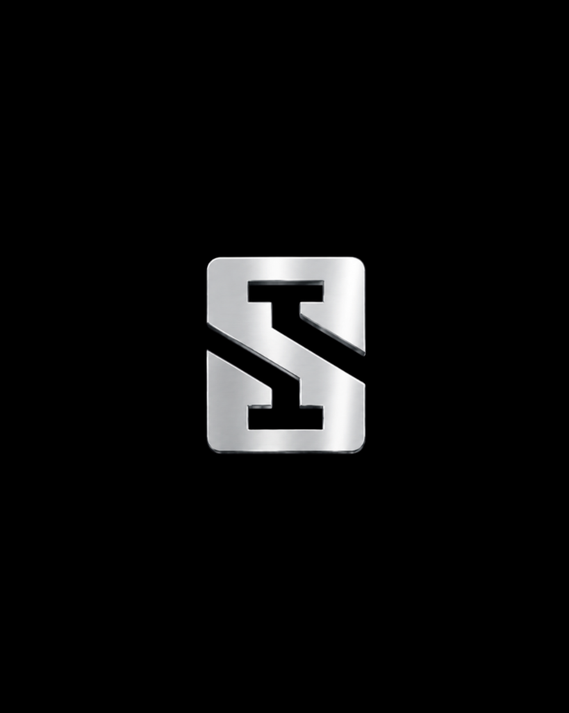

DIBANGUN DARI PENGALAMAN,
DIKERJAKAN DENGAN PRESISI
Bengkel las dan spesialis fabrikasi untuk kebutuhan hunian, komersial, dan konstruksi di Pontianak, Kalimantan Barat. Mengutamakan presisi material dan kekuatan struktur.
Lihat Project
PERJALANAN KAMI
Dari bengkel las hingga menjadi partner fabrikasi untuk berbagai kebutuhan hunian.
Memulai perjalanan sebagai bengkel las (Hendro Las) dan mengerjakan berbagai kebutuhan fabrikasi di Pontianak.
Memperluas pengerjaan fabrikasi stainless steel, pagar dorong, kanopi ACP, dan partisi kaca.
Dipercaya menangani berbagai proyek hunian mewah & bangunan komersial di Pontianak & sekitarnya.
Berdiri kokoh sebagai aplikator konstruksi & spesialis las terdepan dengan standar presisi tinggi.
NILAI UTAMA KAMI
PRESISI
Pengerjaan yang mengutamakan detail, kerapian potongan, dan ketepatan ukuran di lapangan.
KUALITAS
Material tebal standar tinggi dan proses las disesuaikan dengan beban serta kebutuhan proyek.
PELAYANAN
Komunikasi ramah, konsultasi rinci, dan pelayanan yang profesional serta transparan.
KETEPATAN
Berkomitmen penuh pada proses pengerjaan, estimasi waktu, dan garansi hasil akhir.
KEMAMPUAN KAMI
Dari fabrikasi hingga instalasi, kami menangani berbagai kebutuhan konstruksi sesuai karakter proyek.
FABRIKASI
PENGELASAN
KONSTRUKSI
INSTALASI
DARI RENCANA MENJADI HASIL
Setiap pekerjaan dimulai dari memahami kebutuhan hingga memastikan hasil terpasang dengan baik.
KONSULTASI
Memahami kebutuhan, fungsi ruang, dan konsep desain proyek Anda.
SURVEY
Pengukuran presisi dan pengecekan kondisi struktur di lokasi.
PENAWARAN
Menentukan material, ketebalan spesifikasi, dan estimasi biaya.
FABRIKASI
Proses pemotongan, perakitan, & pengelasan presisi di workshop.
INSTALASI
Pemasangan aman dan pengecekan hasil akhir hingga rapi sempurna.
DI BALIK SETIAP PEKERJAAN
Dikerjakan langsung oleh tim yang memahami proses dari fabrikasi hingga instalasi.


HASIL PEKERJAAN KAMI
Beberapa pekerjaan yang menjadi bagian dari perjalanan Stainless Indah.
Proyek Mawar Indah 2025
Private Residence — Pontianak
Proyek Karya Tani Pak Nyap
Residential Project — Pontianak
Proyek Railling Tangga Pak Nyap
Modern Living — Pontianak
Proyek Lift Barang Pak Nyap
Commercial Warehouse — PontianakARSIP PORTOFOLIO KARYA
Eksplorasi dokumentasi pengerjaan proyek Stainless Indah dari tahun ke tahun.
Dokumentasi Proyek Unggulan 2025
Dokumentasi Proyek 2024
Lihat Karya 2024Dokumentasi Proyek 2023
Lihat Karya 2023Dokumentasi Proyek 2022
Lihat Karya 2022Dokumentasi Proyek 2020
Lihat Karya 2020Dokumentasi Proyek 2018
Lihat Karya 2018Arsip Proyek Awal 2017
Lihat Karya 2017APA KATA MEREKA
"Pengerjaan kanopi ACP sangat rapi dan kokoh. Tim Stainless Indah sangat profesional dari mulai survey hingga pemasangan selesai tepat waktu."
"Railing tangga stainless kaca pesanan kami hasilnya sangat elegan dan presisi. Material tebal dan finishing lasnya sangat bersih."
"Sangat puas dengan konstruksi pagar dorong stainless. Pelayanan konsultasi ramah dan memberikan solusi terbaik sesuai budget."
PUNYA RENCANA PROYEK?
Diskusikan kebutuhan fabrikasi Anda bersama Stainless Indah.
KONSULTASI VIA WHATSAPP →